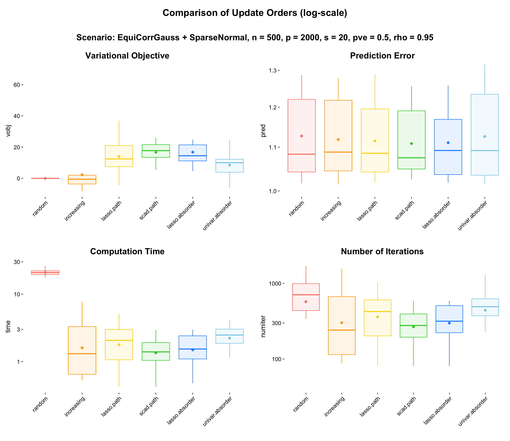

Last updated: 2019-10-22
Checks: 6 0
Knit directory: mr-ash-workflow/
This reproducible R Markdown analysis was created with workflowr (version 1.3.0). The Checks tab describes the reproducibility checks that were applied when the results were created. The Past versions tab lists the development history.
Great! Since the R Markdown file has been committed to the Git repository, you know the exact version of the code that produced these results.
Great job! The global environment was empty. Objects defined in the global environment can affect the analysis in your R Markdown file in unknown ways. For reproduciblity it’s best to always run the code in an empty environment.
The command set.seed(20191007) was run prior to running the code in the R Markdown file. Setting a seed ensures that any results that rely on randomness, e.g. subsampling or permutations, are reproducible.
Great job! Recording the operating system, R version, and package versions is critical for reproducibility.
Nice! There were no cached chunks for this analysis, so you can be confident that you successfully produced the results during this run.
Great! You are using Git for version control. Tracking code development and connecting the code version to the results is critical for reproducibility. The version displayed above was the version of the Git repository at the time these results were generated.
Note that you need to be careful to ensure that all relevant files for the analysis have been committed to Git prior to generating the results (you can use wflow_publish or wflow_git_commit). workflowr only checks the R Markdown file, but you know if there are other scripts or data files that it depends on. Below is the status of the Git repository when the results were generated:
Ignored files:
Ignored: .Rhistory
Ignored: .Rproj.user/
Ignored: ETA_1_lambda.dat
Ignored: ETA_1_parBayesB.dat
Ignored: analysis/ETA_1_lambda.dat
Ignored: analysis/ETA_1_parBayesB.dat
Ignored: analysis/mu.dat
Ignored: analysis/varE.dat
Ignored: mu.dat
Ignored: varE.dat
Untracked files:
Untracked: .DS_Store
Untracked: analysis/Result13_LocalCorrelation.Rmd
Untracked: docs/figure/Result13_LocalCorrelation.Rmd/
Untracked: results/equicorr.RDS
Untracked: results/localcorr.RDS
Untracked: results/localcorr.REDS
Unstaged changes:
Modified: analysis/index.Rmd
Modified: code/sim_wrapper.R
Note that any generated files, e.g. HTML, png, CSS, etc., are not included in this status report because it is ok for generated content to have uncommitted changes.
These are the previous versions of the R Markdown and HTML files. If you’ve configured a remote Git repository (see ?wflow_git_remote), click on the hyperlinks in the table below to view them.
| File | Version | Author | Date | Message |
|---|---|---|---|---|
| Rmd | 7f32291 | Youngseok Kim | 2019-10-22 | wflow_publish(“analysis/Result11_UpdateOrder.Rmd”) |
| html | 7d6c1c8 | Youngseok | 2019-10-21 | Build site. |
| html | 79e1aab | Youngseok | 2019-10-17 | Build site. |
| Rmd | 2e3a7f5 | Youngseok | 2019-10-17 | wflow_publish("analysis/*.Rmd") |
This .Rmd file is to plot results for the experiment of MR.ASH’s internal setting.
A list of update orders we consider is as follows.
random: In each outer loop iteration, we sample a permuation map \(\xi:\{1,\cdots,p\} \to \{1,\cdots,p\}\) uniformly at random and run inner loop iterations with the order based on \(\xi\).
increasing: \((1,\cdots,p)\), i.e. in each outer loop iteration, we update \(q_1,q_2,\cdots,q_p\) in this order.
lasso.pathorder: we update \(q_j\) prior to \(q_{j'}\) when \(\beta_j\) appears earlier than \(\beta_{j'}\) in the lasso path. If ties occur, then increasing order applies to those ties.
scad.pathorder: we update \(q_j\) prior to \(q_{j'}\) when \(\beta_j\) appears earlier than \(\beta_{j'}\) in the scad path. If ties occur, then increasing order applies to those ties.
lasso.absorder: we update \(q_j\) prior to \(q_{j'}\) when the lasso solution satisfies \(\hat\beta_j \geq \hat\beta_{j'}\). If ties occur, then increasing order applies to those ties.
univar.absorder: we update \(q_j\) prior to \(q_{j'}\) when the univariate linear regression solution satisfies \(\hat\beta_j \geq \hat\beta_{j'}\). If ties occur, then increasing order applies to those ties.
We sample the equicorrelated Gaussian measurement \(X_{ij} \sim N(0,\Sigma)\) where \(\Sigma\) has diagonal entries \(1\) and off-diagonal entries \(\rho\).
The we construct \(X \in \mathbb{R}^p\) with \(n = 500\) and \(p = 2000\).
We will use \(\rho = 0.95\). In this case, MR.ASH with a default setting (i.e. the null intiailization and the increasing update order) does not outperform.
Indeed, using this simulation setting and \(\rho > 0.5\), E-ENET, SCAD, and MCP performs better than MR.ASH.
We sample the i.i.d. normal coefficients \(\beta_j \sim N(0,\sigma_\beta^2)\) for \(j \in J\) and \(\beta_ j = 0\) otherwise, where \(J\) is a set of randomly \(s\) indices in \(\{1,⋯,p\}\)c hosen uniformly at random.
This signal will be called sparsenormal.
We fix \(s = 20\) throughout this experiment.
Then we sample \(y = X\beta + \epsilon\), where \(\epsilon \sim N(0,\sigma^2 I_n)\).
We fix PVE = 0.5, where PVE is the proportion of variance explained, defined by
\[
{\rm PVE} = \frac{\textrm{Var}(X\beta)}{\textrm{Var}(X\beta) + \sigma^2},
\] where \(\textrm{Var}(a)\) denotes the sample variance of \(a\) calculated using R function var. To this end, we set \(\sigma^2 = \textrm{Var}(X\beta)\).
The above two figures display the prediction error. The prediction error we define here is
\[ \textrm{Pred.Err}(\hat\beta;y_{\rm test}, X_{\rm test}) = \frac{\textrm{RMSE}}{\sigma} = \frac{\|y_{\rm test} - X_{\rm test} \hat\beta \|}{\sqrt{n}\sigma} \] where \(y_{\rm test}\) and \(X_{\rm test}\) are test data sample in the same way. If \(\hat\beta\) is fairly accurate, then we expect that \(\rm RMSE\) is similar to \(\sigma\). Therefore in average \(\textrm{Pred.Err} \geq 1\) and the smaller the better.
A list of packages we have loaded is collapsed. Please click “code” to see the list.
library(Matrix); library(ggplot2); library(cowplot); library(susieR); library(BGLR);
library(glmnet); library(varbvs2); library(ncvreg); library(L0Learn); library(varbvs);
standardize = FALSE
source('code/method_wrapper.R')
source('code/sim_wrapper.R')sdat = readRDS("results/updateorder_rho0.95.RDS")
sdat$fit = factor(sdat$order, levels = c("random","increasing","lasso.path",
"scad.path","lasso.absorder","univar.absorder"))
col = rev(c("skyblue","dodgerblue","limegreen","gold","orange","salmon"))
p1 = my.box2(sdat, "fit", "vobj", cols = col) +
theme(axis.line = element_blank(),
axis.text.x = element_text(angle = 45,hjust = 1),
legend.position = "none")
subtitle = ggdraw() + draw_label("Variational Objective", fontface = 'bold', size = 18)
p1 = plot_grid(subtitle, p1, ncol = 1, rel_heights = c(0.06,0.95))
p2 = my.box2(sdat, "fit", "pred", cols = col) +
theme(axis.line = element_blank(),
axis.text.x = element_text(angle = 45,hjust = 1),
legend.position = "none") +
scale_y_continuous(trans = "log10", breaks = c(1,1.1,1.2,1.3)) +
coord_cartesian(ylim = c(1,1.3))
subtitle = ggdraw() + draw_label("Prediction Error", fontface = 'bold', size = 18)
p2 = plot_grid(subtitle, p2, ncol = 1, rel_heights = c(0.06,0.95))
p3 = my.box2(sdat, "fit", "time", cols = col) +
theme(axis.line = element_blank(),
axis.text.x = element_text(angle = 45,hjust = 1),
legend.position = "none") +
scale_y_continuous(trans = "log10")
subtitle = ggdraw() + draw_label("Computation Time", fontface = 'bold', size = 18)
p3 = plot_grid(subtitle, p3, ncol = 1, rel_heights = c(0.06,0.95))
p4 = my.box2(sdat, "fit", "numiter", cols = col) +
theme(axis.line = element_blank(),
axis.text.x = element_text(angle = 45,hjust = 1),
legend.position = "none") +
scale_y_continuous(trans = "log10")
subtitle = ggdraw() + draw_label("Number of Iterations", fontface = 'bold', size = 18)
p4 = plot_grid(subtitle, p4, ncol = 1, rel_heights = c(0.06,0.95))
title = ggdraw() + draw_label("Comparison of Update Orders (log-scale)", fontface = 'bold', size = 20)
subtitle = ggdraw() + draw_label("Scenario: EquiCorrGauss + SparseNormal, n = 500, p = 2000, s = 20, pve = 0.5, rho = 0.95", fontface = 'bold', size = 18)
fig_main = plot_grid(p1,p2,p3,p4, nrow = 2, rel_widths = c(0.3,0.3,0.3))
fig = plot_grid(title,subtitle,fig_main, ncol = 1, rel_heights = c(0.06,0.06,0.95))
fig
| Version | Author | Date |
|---|---|---|
| 79e1aab | Youngseok | 2019-10-17 |
glmnet_pathorder = function(fit.glmnet) {
# perform lasso regression and reorder regressors by "importance"
beta_path = coef(fit.glmnet)[-1,]
K = dim(beta_path)[2]
path_order = c()
for (k in 1:K) {
crt_path = which(beta_path[,k] != 0)
if (length(crt_path) != 0 & length(path_order) == 0) {
path_order = c(path_order, crt_path)
} else if(length(crt_path) != 0) {
path_order = c(path_order, crt_path[-which(crt_path %in% path_order)] )
}
}
path_order = unname(path_order)
index_order = c(path_order, seq(1,dim(beta_path)[1])[-path_order])
return (index_order)
}
glmnet_absorder = function(beta) {
return (order(abs(beta), decreasing = TRUE))
}
univar_absorder = function(X, y) {
colnorm = c(colMeans(X^2))
return (order(abs(c(t(X) %*% y) / colnorm), decreasing = TRUE))
}tdat1 = list()
n = 500
p = 2000
s = 20
sa2 = (2^((0:19) / 20) - 1)^2
method_list = c("random","increasing","lasso.path","scad.path","lasso.absorder","univar.absorder")
method_num = length(method_list)
iter_num = 20
pred = matrix(0, iter_num, method_num); colnames(pred) = method_list
time = matrix(0, iter_num, method_num); colnames(time) = method_list
numiter = matrix(0, iter_num, method_num); colnames(numiter) = method_list
vobj = matrix(0, iter_num, method_num); colnames(vobj) = method_list
for (i in 1:20) {
data = simulate_data(n, p, s = s, seed = i, signal = "normal", rho = 0.95,
design = "equicorrgauss", pve = 0.5)
X = data$X
y = data$y
fit.lasso <- cv.glmnet(x = X, y = y, standardize = standardize)
fit.lasso$beta = coef(fit.lasso)[-1]
fit.scad <- cv.ncvreg(X, y, penalty = "SCAD", nfolds = 10)
fit.scad$beta = coef(fit.scad)[-1]
lasso.pathorder = glmnet_pathorder(fit.lasso$glmnet.fit)
lasso.absorder = glmnet_absorder(fit.lasso$beta)
univar.absorder = univar_absorder(X, y)
scad.pathorder = glmnet_pathorder(fit.scad$fit)
t.mrash1 = system.time(
fit.mrash1 <- mr_ash_order(X = X, y = y, sa2 = sa2,
stepsize = 1, max.iter = 2000,
standardize = standardize, order = "random",
tol = list(epstol = 1e-12, convtol = 1e-8)))
t.mrash2 = system.time(
fit.mrash2 <- mr_ash_order(X = X, y = y, sa2 = sa2,
stepsize = 1, max.iter = 2000,
standardize = standardize, order = "increasing",
tol = list(epstol = 1e-12, convtol = 1e-8)))
t.mrash3 = system.time(
fit.mrash3 <- mr_ash_order(X = X, y = y, sa2 = sa2,
stepsize = 1, max.iter = 2000,
standardize = standardize, order = "manual",
o = rep(lasso.pathorder, 2000),
tol = list(epstol = 1e-12, convtol = 1e-8)))
t.mrash4 = system.time(
fit.mrash4 <- mr_ash_order(X = X, y = y, sa2 = sa2,
stepsize = 1, max.iter = 2000,
standardize = standardize, order = "manual",
o = rep(scad.pathorder, 2000),
tol = list(epstol = 1e-12, convtol = 1e-8)))
t.mrash5 = system.time(
fit.mrash5 <- mr_ash_order(X = X, y = y, sa2 = sa2,
stepsize = 1, max.iter = 2000,
standardize = standardize, order = "manual",
o = rep(lasso.absorder, 2000),
tol = list(epstol = 1e-12, convtol = 1e-8)))
t.mrash6 = system.time(
fit.mrash6 <- mr_ash_order(X = X, y = y, sa2 = sa2,
stepsize = 1, max.iter = 2000,
standardize = standardize, order = "manual",
o = rep(univar.absorder, 2000),
tol = list(epstol = 1e-12, convtol = 1e-8)))
for (j in 1:6) {
fit = get(paste("fit.mrash",j,sep = ""))
pred[i,j] = norm(data$y.test - predict(fit, data$X.test), '2') / sqrt(500) / data$sigma
numiter[i,j] = fit$iter
vobj[i,j] = fit$varobj[fit$iter]
time[i,j] = get(paste("t.mrash",j,sep = ""))[3]
}
print(c(vobj[i,]))
}
tdat1 = data.frame(pred = c(pred), vobj = c(vobj), time = c(time),
numiter = c(numiter),
order = rep(c("random","increasing","lasso.path","scad.path",
"lasso.absorder","univar.absorder"), each = 20))
sessionInfo()R version 3.5.3 (2019-03-11)
Platform: x86_64-apple-darwin15.6.0 (64-bit)
Running under: macOS High Sierra 10.13.3
Matrix products: default
BLAS: /Library/Frameworks/R.framework/Versions/3.5/Resources/lib/libRblas.0.dylib
LAPACK: /Library/Frameworks/R.framework/Versions/3.5/Resources/lib/libRlapack.dylib
locale:
[1] en_US.UTF-8/en_US.UTF-8/en_US.UTF-8/C/en_US.UTF-8/en_US.UTF-8
attached base packages:
[1] stats graphics grDevices utils datasets methods base
other attached packages:
[1] varbvs_2.6-5 L0Learn_1.1.0 ncvreg_3.11-1 varbvs2_0.1-1 glmnet_2.0-16
[6] foreach_1.4.4 BGLR_1.0.8 susieR_0.7.1 cowplot_0.9.4 ggplot2_3.2.1
[11] Matrix_1.2-17
loaded via a namespace (and not attached):
[1] Rcpp_1.0.2 RColorBrewer_1.1-2 plyr_1.8.4
[4] compiler_3.5.3 pillar_1.3.1 git2r_0.25.2
[7] workflowr_1.3.0 iterators_1.0.10 tools_3.5.3
[10] digest_0.6.18 evaluate_0.13 tibble_2.1.1
[13] gtable_0.3.0 lattice_0.20-38 pkgconfig_2.0.2
[16] rlang_0.4.0 yaml_2.2.0 xfun_0.6
[19] withr_2.1.2 stringr_1.4.0 dplyr_0.8.3
[22] knitr_1.22 fs_1.3.0 rprojroot_1.3-2
[25] grid_3.5.3 tidyselect_0.2.5 glue_1.3.1
[28] R6_2.4.0 rmarkdown_1.12 latticeExtra_0.6-28
[31] reshape2_1.4.3 purrr_0.3.2 magrittr_1.5
[34] whisker_0.3-2 codetools_0.2-16 backports_1.1.4
[37] scales_1.0.0 htmltools_0.4.0 assertthat_0.2.1
[40] colorspace_1.4-1 labeling_0.3 nor1mix_1.2-3
[43] stringi_1.4.3 lazyeval_0.2.2 munsell_0.5.0
[46] truncnorm_1.0-8 crayon_1.3.4